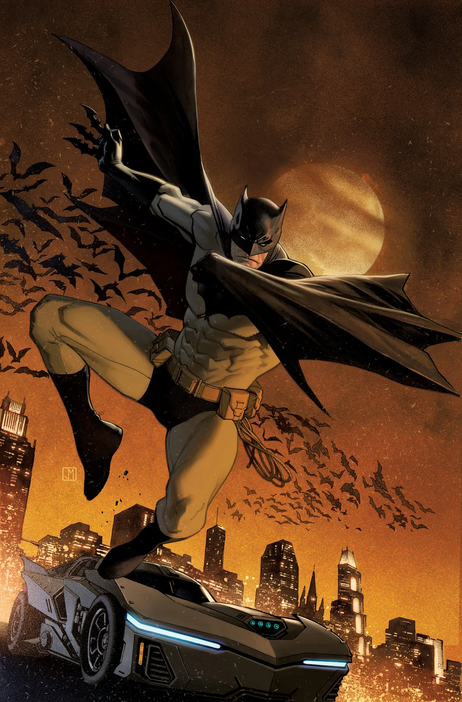

The Dark Knight
Batman
Batman, also known as Bruce Wayne, is Gotham's protector. He has no superpowers and relies on training and technology. After witnessing his parents' murder... Batman, also known as Bruce Wayne, is Gotham's protector. He has no superpowers and relies on training and technology. After witnessing his parents' murder, he dedicated his life to fighting crime. He is one of the most iconic superheroes ever created, and has led teams like the Justice League and the Bat Family. His greatest weapon is his mind, and his greatest burden is the vow he can never put down.